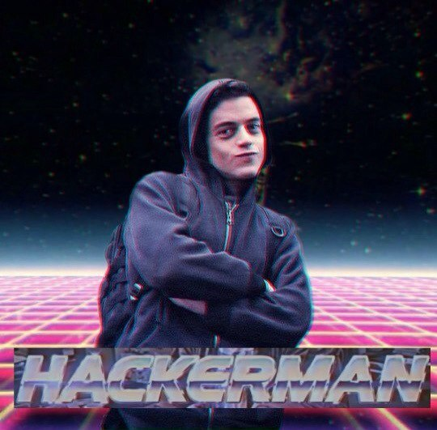

Hi Abhiram.V Here
root@anon:~# WHOAMI
I am ABHIRAM V, a B.Tech Graduate who is into cyber security research,
I do bug bounty hunting, Capture The Flag as a hobby and passion, i am from Kerala, India. üáÆüá≥
About Me
I am an Information security enthusiast and who loves to do research on the topics related to InfoSec and Pentesting. Iam a Bug Bounty Hunter, a CTF Player and a Content creator. I try and work to improvise my knowledge through reading various blogs, writeups and resources from several Hacker community and forums.
As a Security Enthusiast, my major includes Web Security and Network Security. Now i tend to explore Exploit development too.
As a Bug Bounty Hunter I like to secure renowned companies digital products on the Internet and Opensource products. It has just been few months since i start doing Bug bounty hunting but within this time, I have been acknowledged by organizations like Dell,Indeed,Upwork,Telekom etc.
As a CTF Player i love to work in Hackthebox and Im a GURU Rank holder in the same
as a part of this i did Pentester Lab Pro and earned considerable amount of badges from there.
As a Content Creator, I love to develop CTF for the public, share my knowledge, experiences and findings through blogs and several social media platforms. I love to travel as it provides me a peace of mind and by doing so i collect memmories by taking pictures of beautiful places and loved ones and even anything i find curious out there.
Achievements
Top 20 in the world in Cyberwraith Challenge in Defcon
Volunteered for the Defcon 28 as a part of Red Team Village
Coordinated Asian region fo Cyber Jungle Virtual Summit
Admin account takeover by executing Persistent Blind XSS in Cabot application
I already shared the blog post of my Persistent XSS in Cabot application.For the readers who didnt see it, Cabot is a free, open-source, self-hosted infrastructure monitoring platform that provides some of the best features of PagerDuty, Server Density, Pingdom and Nagios without their cost and complexity.It provides a web interface that allows you to monitor services and send telephone, sms or hipchat/email alerts to your on-duty team if those services start misbehaving or go down - all without writing a line of code.
While hunt for more bugs in Cabot application i noticed the instances and services i had created a Instances first and append a simple XSS payloads to find more persistent cross site scripting vulnerability I Navigated to checks and run the application
Yeah I got it.. got another persistent Cross-site Scripting Vulnerability.
But I dont want to stop my findings there i need to do more impact
there is another thing what i didnt used that is creating new services yes lets do it. I created a Service then choose admin account in users to notify and in URL append a gibberish word to create error (I used just XSS ;) ) now open admin account we can see the notification there running the check Stored XSS Triggered.That was really cool now i thought why i didnt used Blind XSS there HAHA.. I fire up my XSS HUNTERcopied the payload and do the same again instead of using Simple XSS payload i used Blind XSS payload now go to admin account and run it Nothing happened in the screen but when i go to my XSShunter there is the admin cookie and i got the mail from XSShunter that Blind XSS triggered.Lol i was surprised Creating an instances in any normal account and creating a alert service to any account including Django Administrator account can be takeover without a popup of XSS.From user account to Django Administrator account i was like

Now time to report
Published in:
Exploit DB
Packet Storm
Exploit Alert
CX Security
Affected component : Creating New Instances and Services
Attack vector :
Cabot application allows Blind XSS in the dashboard of any account via a category of creating New Instances. and triggers blind XSS each time when we run the checks in victim account which lead to account takeover including Django Administrator account
Reproduction steps:
1. Download and Install Latest Cabot Application in a local server.
2. Create an admin account and using the admin account create a user account
3. Open 2 browser tabs login with admin account and another with user account.
4. Using user account create an instance in the Address part use a put our Blind XSS payload.

5. Create a Service choose admin account in users to notify and in URL use a gibberish word to create an error.
6. Now open Admin account and navigate to checks we can see that it failed now click run button.

8. Blind XSS triggered in admin account and got cookies via XSSHunter.

I had tested this Vulnerablity in both XSSHunter and Blindf
Adding a Proof of Concept Video along with this Blog post
THANK YOU For Reading my blog post